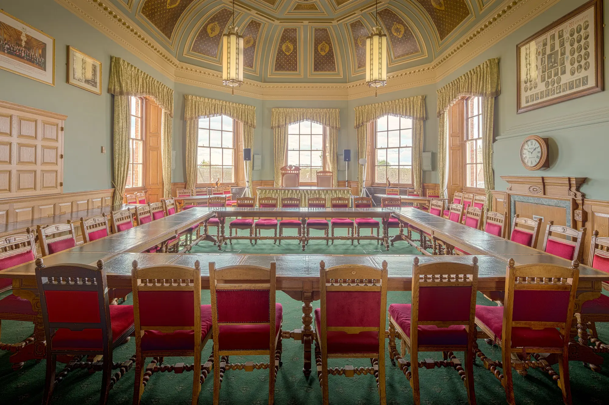

A new council needs its democracy working on day one.
Committees, a constitution, a meeting calendar, a forward plan and a public record, all live the morning the new council exists. Qualigraf can have the platform side of that running before vesting day.
Vesting day for East Surrey and West Surrey councils.
Twelve councils become two.
From 1 April 2027, East Surrey Council and West Surrey Council replace Surrey's twelve county, district and borough councils. Their shadow authorities have been in place since the local elections in May 2026, preparing the new councils before they take on services.
Two new councils means two sets of committees, two constitutions and two public records starting from nothing, while twelve existing councils keep running theirs until the last day.
Where reorganisation stands.
Surrey is going ahead. Across the rest of the programme, the government is reviewing its decisions after new legal advice.
If you're in Surrey
Vesting day hasn't moved. The shadow authorities need committee papers, a forward plan and public meeting pages running now, and the new councils need them on 1 April.
If your area is paused
Your council carries on as it is for now. The review is a good moment to look at the system your committees run on, before any new timetable arrives.

The first meeting of a new council is also its first public record.
Its agenda, its papers, its decisions and its webcast start the archive the council will keep for years. Start it in the system it's going to live in.
What a new council's Democratic Services needs on vesting day.
Tick off what you've already got. Nothing you tick is stored or sent.
0 of 10 ready
Most of this list lives in Qualigraf.
One platform to stand the new council up on.
Unlimited meeting types
Set up shadow meetings now and the new council's committees for vesting day, side by side.
Approval routes to match the new constitution
Routes per document type, set once and changed when the constitution changes.
A first year planned out
The Long-term planner holds the calendar, the milestones and the deadlines.
Member profiles from the start
Every Member gets a profile page with their votes and contributions as they build up.
Public from the first meeting
Agendas, decisions and webcasts published automatically to the new website.
Fully web based
Nothing to install on council servers, so there's no wait for new infrastructure.
Bring your hardest meeting. We'll run it on Qualigraf.
A walkthrough built around your own committee cycle, your deadlines, your approval routes and your Members.